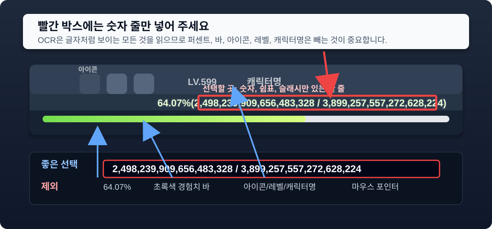

사용법
- `화면 선택`으로 게임 화면을 선택합니다.
- 하단 미리보기에서 괄호 안의 현재 경험치 / 필요 경험치 숫자 한 줄만 드래그해서 지정합니다.
- 빨간 박스 안에는 숫자, 쉼표, 슬래시(/)만 들어가게 잡아 주세요.
- 2,472,784,529,706,477,056 / 3,899... 같은 숫자 줄을 중앙에 두고, 퍼센트(%), 초록색 바, 위쪽 능력치/장비/스킬 글자는 제외해 주세요.
- 영역을 다시 잡으려면 `영역 지우기`를 누른 뒤 다시 드래그합니다.
- 시작 레벨, 종료 레벨, 모래시계 레벨, 시작/종료 현재 경험치, 자동 측정 시간을 확인한 뒤 `측정 시작`을 누릅니다.
- `측정 시작`을 누르면 시작 캡처가 즉시 저장되고, 설정 시간이 지나면 종료 캡처와 계산이 자동으로 진행됩니다.
- 측정 중에는 경험치 숫자 위에 마우스 포인터를 두지 마세요. 포인터가 캡처 영역에 겹치면 OCR이 흔들릴 수 있습니다.
- 레벨업이 있었다면 종료 레벨을 직접 입력해 주세요. 이 페이지는 LV 영역을 따로 인식하지 않습니다.
- 측정 결과를 맹신하지 말고 2~3번 반복 측정해서 비교해 주세요.
- OCR 값이 이상하면 자동 입력값을 지우고 직접 입력해 주세요. 캡처 방식이므로 계산은 항상 입력된 종료 현재 경험치 - 입력된 시작 현재 경험치를 기준으로 합니다.
영역 지정 기준

OCR 모드에서는 색 띠가 아니라 괄호 안 숫자 텍스트 한 줄만 좁게 선택해야 합니다. 박스 안에 아이콘, 레벨, 퍼센트, 초록색 바가 섞이면 숫자를 잘못 읽을 수 있습니다.
화면 선택 후 경험치 숫자 텍스트만 드래그하세요.
대기 중
레벨업 시 측정이 정확하지 않을 수 있습니다.
시작 경험치-
종료 경험치-
측정 시간-
획득 경험치-
1분당 경험치-
시작 캡처
종료 캡처
OCR 원문이 여기에 표시됩니다.
시작/종료 캡처 후 비교 결과가 여기에 표시됩니다.